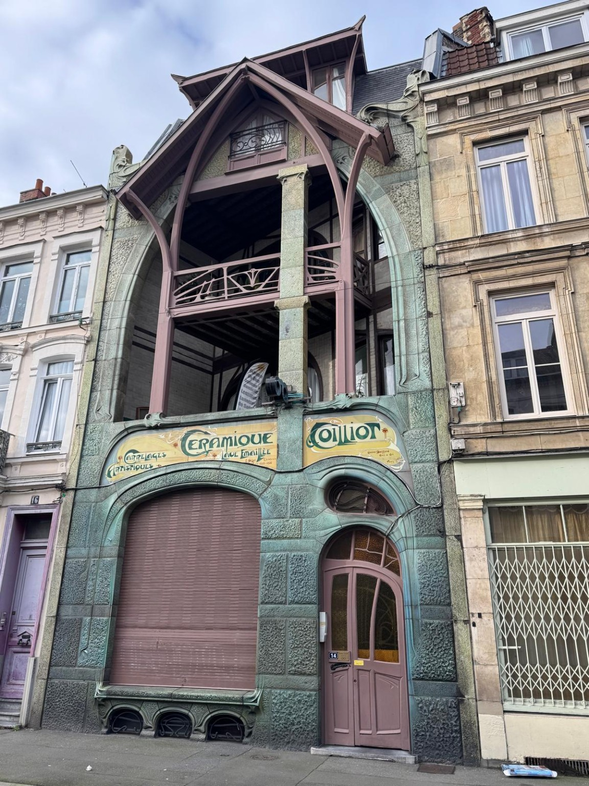
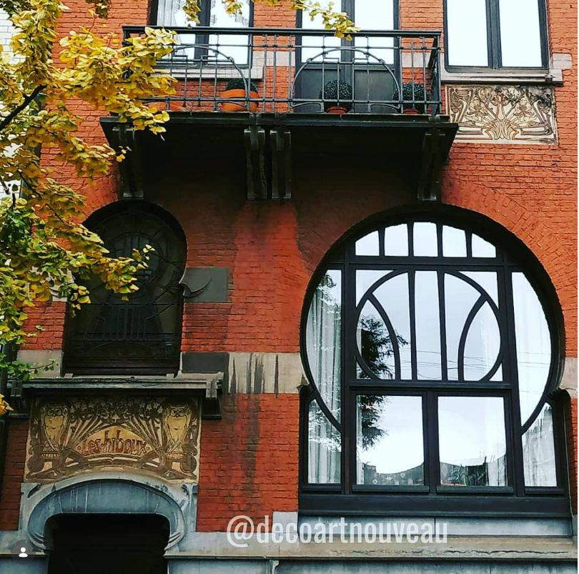

Maison Coilliot
Hector Guimard turns a narrow commercial facade into a total composition of architecture, lettering and craft.
Featured building · Palermo
An Art Nouveau residence designed by Ernesto Basile
An exterior staircase leads towards an asymmetrical facade of towers, arches and varied rooflines. In Palermo, Villino Florio brings several architectural forms together in a distinctive expression of Italian Liberty.
Open the photographic dossierPhotography by Christophe Aspel
The pilot selection
Architecture comes first: complete facades, material details and concise historical context.

Hector Guimard turns a narrow commercial facade into a total composition of architecture, lettering and craft.

Two sculpted owls, geometric windows, ironwork and sgraffito give this Brussels facade its identity.
Ernesto Basile composes towers, arches and rooflines around a monumental exterior stair.
Article page not yet redesignedPolychrome brickwork, stained glass and a projecting bay window shape an elaborate Art Nouveau facade.
Article page not yet redesignedExplore the magazine